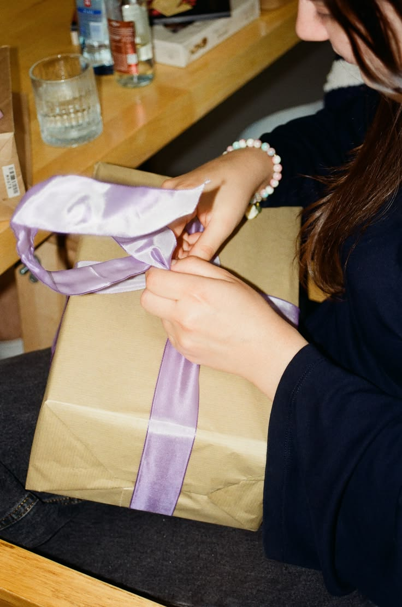
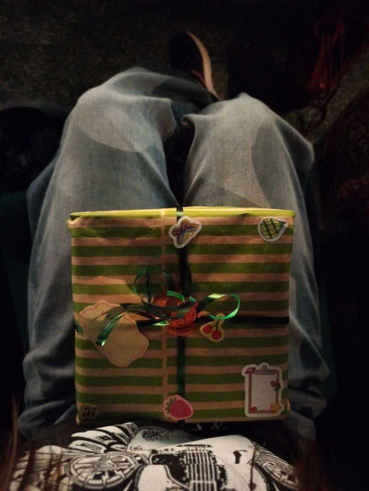

GOREUDA GIFT REPORT
선물을 고르는 사람을 위한
인사이트 매거진
관계와 나이, 기념일에 따라 달라지는 선물의 기준을 읽어보세요. 많이 주는 선물보다 더 반가운 선택을 찾습니다.

ISSUE 01
COVER STORY · FRIENDSHIP
20대 친구 생일 선물,
많이 주는 것과
받고 싶은 것 사이
예쁜 디퓨저보다 매일 쓰는 핸드크림이 더 반가운 이유. 주는 사람의 선택과 받는 사람의 취향 사이에 생기는 작은 차이를 살펴봅니다.
선물의 정답은 가격보다 일상에 있어요.
주는 사람의 기준과 받는 사람의 기준
선물을 고를 때 우리는 특별해 보이는 물건에 먼저 눈길이 갑니다. 하지만 받는 사람에게는 평소 자주 사용하는 물건이나 자신의 취향에 맞는 작은 선물이 더 반가울 수 있어요.
20대 친구에게는 어떤 선물이 좋을까요?
친구가 자주 사용하는 향, 좋아하는 간식, 평소 관심을 보였던 취미를 떠올려 보세요. 핸드크림이나 디저트처럼 부담이 적은 선물도 취향을 잘 반영하면 충분히 의미 있습니다.
GOREUDA TIP — 무엇을 살지 고민되면 ‘이 친구가 다음 주에도 사용할까?’를 먼저 질문해 보세요.
※ 이 글은 선물 선택을 돕기 위한 편집형 가이드이며, 실제 설문조사 통계를 인용한 분석 결과는 아닙니다.
나에게 맞는 선물 추천받기 →BY RELATIONSHIP
관계가 달라지면
선물의 기준도 달라져요.
가까운 정도와 관계의 성격에 따라 부담스럽지 않은 선물의 선이 달라집니다.

BY GENERATION
나이대별로 달라지는
나이대별로 달라지는
‘좋은 선물’의 의미
EDITOR'S NOTE
실패를 줄이는
선물 고르기
01
받는 사람의 일상을 먼저 떠올리세요.
이미 자주 사용하는 물건과 자연스럽게 연결되는 선물은 실패할 가능성이 낮아요.
02
취향이 강한 선물은 작은 용량으로 시작하세요.
향수나 화장품은 휴대용이나 미니 사이즈가 부담 없이 취향을 발견하기 좋아요.
03
많이 받는 선물인지 확인하세요.
머그컵과 대용량 디퓨저처럼 이미 여러 개 있을 수 있는 물건은 한 번 더 생각해 보세요.
04
가격보다 교환의 편리함도 중요해요.
받는 사람이 옵션을 바꾸기 쉬운 판매처인지 확인하면 선물의 부담을 줄일 수 있어요.